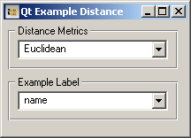
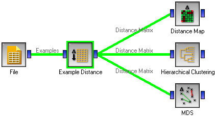

This is documentation for Orange 2.7. For the latest documentation, see Orange 3.
Example Distance¶
Computes distances between examples in the data set
Signals¶
- Inputs:
- Examples
A list of examples
- Outputs:
- Distance Matrix
A matrix of example distances
Description¶
Widget Example Distances computes the distances between the examples in the data sets. Don’t confuse it with a similar widget for computing the distances between attributes.
The available Distance Metrics definitions are Euclidean, Manhattan, Hammming and Relief. Besides, of course, different formal definitions, the measures also differ in how correctly they treat unknown values. Manhattan and Hamming distance do not excel in this respect: when computing by-attribute distances, if any of the two values are missing, the corresponding distance is set to 0.5 (on a normalized scale where the largest difference in attribute values is 1.0). Relief distance is similar to Manhattan, but with a more correct treatment for discrete attributes: it computes the expected distances by the probability distribution computed from the data (see any Kononenko’s papers on ReliefF for the definition).
The most correct treatment of unknown values is done by the Euclidean metrics which computes and uses the probability distributions of discrete attributes, while for continuous distributions it computes the expected distance assuming the Gaussian distribution of attribute values, where the distribution’s parameters are again assessed from the data.
The rows/columns of the resulting distance matrix can be labeled by the values of a certain attribute which can be chosen in the bottom box, Example label.
Examples¶
This widget is a typical intermediate widget: it gives shows no user readable results and its output needs to be fed to a widget that can do something useful with the computed distances, for instance the Distance Map, Hierarchical Clustering or MDS.
